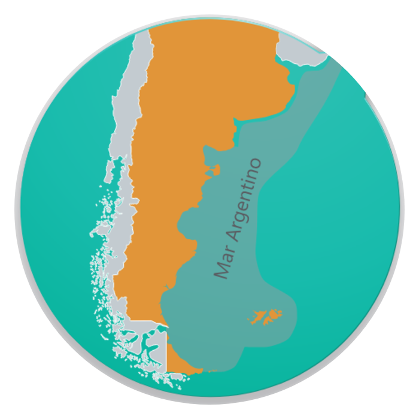

PaísCountryArgentina — Mar ArgentinoArgentina — Argentine Sea
DistribuciónDistributionPlataforma y talud continentalContinental shelf & slope
ProfundidadDepth50–1.000 m
Arte de pescaFishing gearPoteras / jigging (pesca nocturna con luces)Jigs / jigging (night fishing with lights)
TemporadaFishing seasonDiciembre–agosto (zafra) · cierres variables por stockDecember–August (season) · closures vary by stock

Distribución (plataforma y talud)Distribution (shelf & slope) · Fuente/Source: INIDEP
Biología / Biology
Talla máx.Max size39 cm (largo del manto)39 cm (mantle length)
Peso máx.Max weight1,3 kg (peso total)1.3 kg (total weight)
Ciclo de vidaLife cycleCorto, alrededor de 1 añoShort, about 1 year
ColorColorDorado oscuro variable (cromatóforos)Variable dark golden (chromatophores)
Especie pelágica con migraciones verticales diarias: asciende a media agua de noche y desciende cerca del fondo de día. Se desplaza formando grandes cardúmenes y se defiende expeliendo tinta.
Pelagic species with daily vertical migrations: rises into mid-water at night and descends near the seabed by day. Moves in large schools and defends itself by ejecting ink.
Presentaciones / Presentations
ProductoProduct
PresentaciónForm
Envase y congeladoPacking & freezing
EnteroWhole
Cuerpo completo con cabeza y tentáculosWhole body with head and tentacles
Block / Interfoliado 10 kg · Túnel estáticoBlock / Interleaved 10 kg · Static tunnel freezer
TuboTube
Manto limpio, sin cabeza ni tentáculosClean mantle, no head or tentacles
IQF → spiral freezer · bolsa 1–10 kgIQF → spiral freezer · bag 1–10 kg
TentáculosTentacles
Manojos de tentáculosTentacle clusters
IQF → spiral freezer · bolsa 1–10 kgIQF → spiral freezer · bag 1–10 kg
AletasWings
Aletas del mantoMantle wings
Interfoliado · bolsa 1–10 kgInterleaved · bag 1–10 kg
Congelado: entero por túnel estático; tubo, anillas y tentáculos por IQF (spiral freezer) para producto suelto. Preferencias de línea según mercado.
Freezing: whole in a static tunnel freezer; tube, rings and tentacles by IQF (spiral freezer) for loose product. Line preferences according to market.
Proteínas, lípidos y energía: INIDEP 2018 (rangos, producto fresco). Omega-3: referencia FishBase/FAO. No sustituyen un análisis de laboratorio del lote.Protein, fat and energy: INIDEP 2018 (ranges, raw product). Omega-3: FishBase/FAO reference. Not a substitute for a batch laboratory analysis.
Conservación y trazabilidad / Storage & traceability